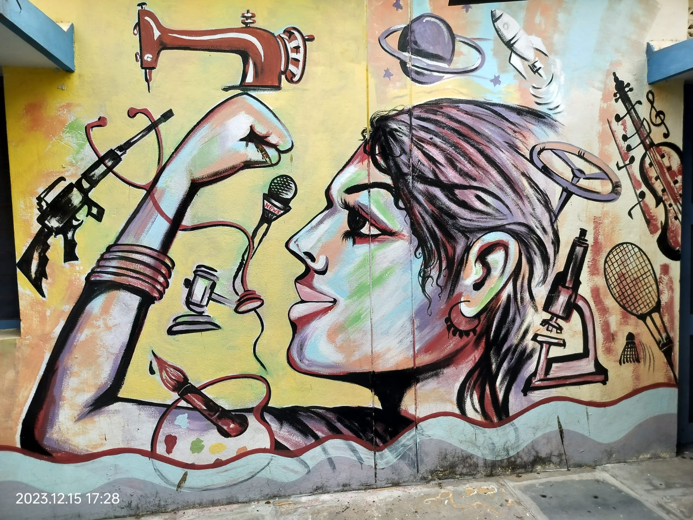
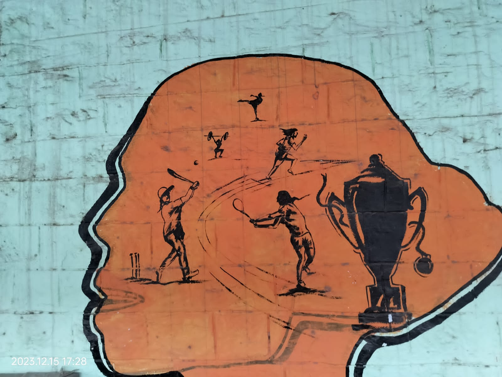

In India, a deeply patriarchal society, women are subjected to constant discrimination and in many cases, harassment. They are legally entitled to equal rights in all spheres of society, yet most women are at great disadvantage. The Rural Development Trust (RDT) works with men and women to achieve gender equality by fighting against gender-based violence and discrimination and striving to improve the social and economic situation of women. By enabling women to reach their full potential and equipping them to be a part of the decision-making processes, we can attain sustainable development. The Women Empowerment sector focuses on these areas of work to attain its goal: